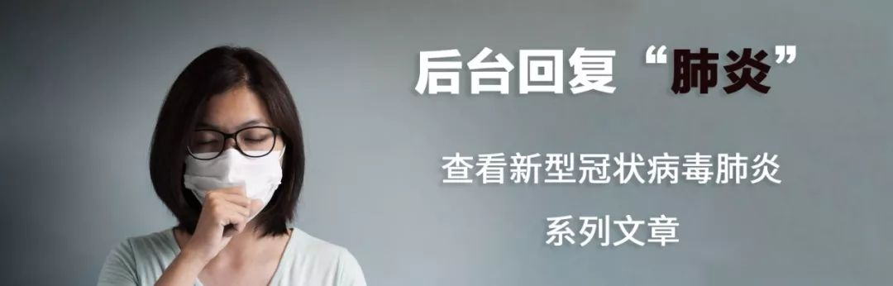
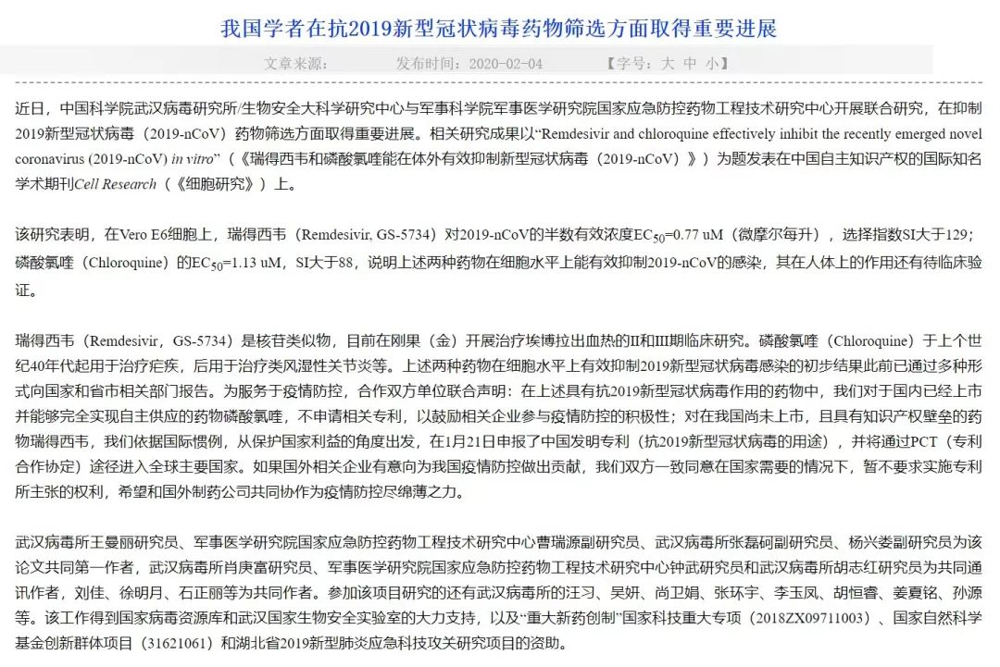
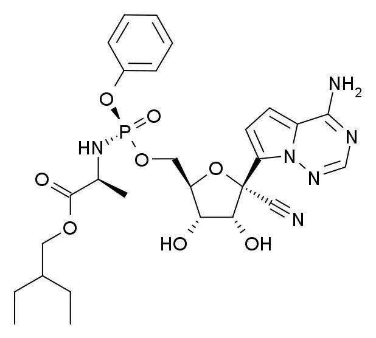
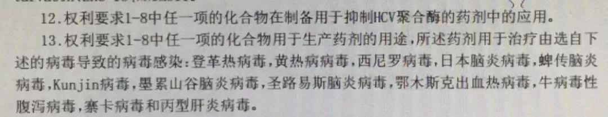
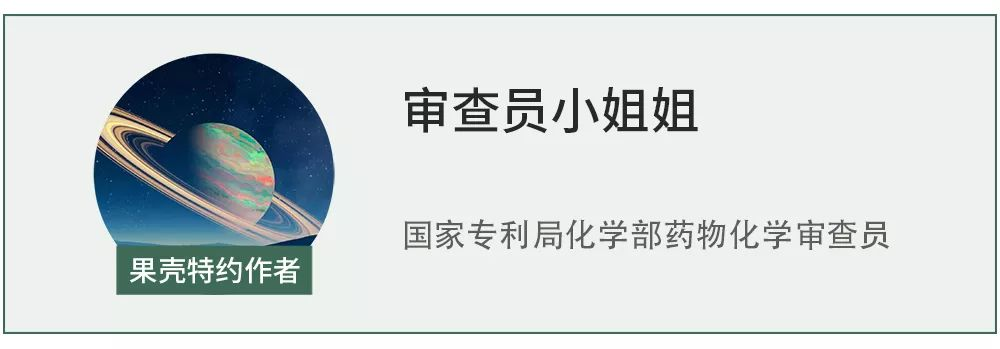

武汉病毒所“抢注”专利：疫情下的“非常规操作” ？
原文链接 备份链接 一则来自中国科学院武汉病毒研究所的信息刷屏了。 2 月 4 日，这则发布于病毒所官网的《我国学者在抗 2019 新型冠状病毒药物筛选方面取得重要进展》称，中国科学院武汉病毒研究所与军事科学院的研究人员发现瑞德西 …

1月31日《新英格兰医学杂志》（NEJM）在线发表的一篇论文显示，吉利德（Gilead）公司研发的抗病毒药瑞德西韦（remdesivir）治愈了美国首例新型冠状病毒肺炎确诊病例。在这关键时刻，这个好消息引起了广大民众尤其是医药工作者的极大关注。
而2月4日，关于这个药物的另一则消息引起了轩然大波：中科院武汉病毒研究所在其官网发布消息表示，其基于对新型冠状病毒药物筛选的研究成果，已于1月21日申报了瑞德西韦抗2019新型冠状病毒的专利。

公告截图 | 中国科学院武汉病毒研究所
武汉病毒研究所有资格申请这项专利吗？他们获得授权的前景如何？假如获得授权，又将有何影响？果壳邀请了一位专利审查员谈谈她的看法。
药物可以申请的专利类型分为两大类
一项涉及药物的发明创造要想获得专利保护，依据其研究的进展和保护期延长的需要，可以以多种类型申请保护，这就是所谓的“专利布局”。药物可以申请的专利大致分为产品权利要求和方法权利要求两大类。
产品权利要求主要涉及化合物本身的权利，比如瑞德西韦的产品权利要求涉及如下化合物的相关通式、异构体、晶体、盐或药物组合物。

瑞德西韦的结构式｜Meodipt [Public domain]
方法权利要求包括化合物制药用途或其制备方法等。具体到瑞德西韦，其方法权利要求包括瑞德西韦的制备工艺、制药用途、以其为活性化合物的疾病治疗方法等。
不同保护类型的授权专利，
保护力度是不同的
大致来说，产品类权利要求的保护力度强于方法权利要求。
简单来说，化合物获得授权后，对该化合物任何用途的使用、许诺销售、销售、进口均需专利权人的许可。
通常，制药用途类申请在申请时间上晚于化合物类申请。因此在化合物的专利保护期限内，如果其他专利权人得到的仅仅是化合物的制药用途授权，那么即使是后者想要实施该制药用途的权利，也应当获得化合物专利权人的许可。
当然反过来说，拥有化合物专利的专利权人想要实施该制药用途的权利时，同样也需要获得拥有制药用途专利的专利权人的许可。
因此，在专利布局时，制药用途类申请一般作为防御性专利，在化合物类专利之后申请，主要用于延长药物的专利保护期。
武汉病毒所的消息还提到，其申报专利后将通过PCT途径进入全球主要国家。PCT，即专利合作条约，是为了在多国申请中简化程序、延长准备时间的一项国际合作条约。分为国际阶段和国家阶段，国际阶段主要是解决受理、公布、检索和初步审查的问题；申请人可依据初步审查意见决定是否进入国家阶段，具体进入哪些国家，专利在具体的国家是否授权仍需依照当地的法规判断。
瑞德西韦的专利保护现状
瑞德西韦是吉利德公司研发的抗病毒药物，目前已完成埃博拉病毒（丝状病毒）的III期临床试验，正在进行冠状病毒的临床研究。
目前吉利德已经以产品形式和治病方法形式请求保护瑞德西韦。其中，通式化合物类申请（CN104262345B，授权日2017.6.23）和具体化合物类申请（CN103052631B，授权日2015.11.25）的中国同族申请已在中国获得授权（授权的权利要求书中还包括了通式化合物制备抑制HCV聚合酶，治疗黄热科病毒、副黏病毒等病毒药剂的用途）。其他类型的申请未进入中国或未进入实质审查程序。

瑞德西韦在中国的具体化合物授权专利 | 授权公告CN104262345B
可以明确的是，瑞德西韦至少被上述授权专利以涵盖其的通式、具体化合物、药物组合物及其治疗副黏病毒等的制药用途的形式保护。
瑞德西韦不属于被武汉病毒所“抢注”
任何单位或个人均可对产品、方法或者其改进类的技术方案向专利局提出专利申请。专利局经过初步审查和实质审查，对专利申请作出授权或驳回决定。
因此，即使原研吉利德已经对瑞德西韦布局了多项专利，任何单位或个人仍有权利就瑞德西韦的任何相关主题提交专利申请，出于鼓励发明创造和为了公共健康目的都是合理合法、无可厚非的。
依据中科院武汉病毒研究所在其官网发布的消息推断，其可能申请了瑞德西韦抗2019新型冠状病毒的用途专利（以下简称武汉病毒所新适应症申请）。因此从申请的类型上说，属于方法类申请中的“新适应症”主题，与保护化合物相关的产品类申请针对的是不同的类型，这是一类针对已知化合物的常见申请类别，为已知化合物新发现的适应症提供保护。且瑞德西韦的具体化合物类申请已在中国获得授权，从这个意义上讲，瑞德西韦不属于被武汉病毒所“抢注”。
武汉病毒所能获得授权吗？
具体化合物的制药用途专利是否符合授权条件，主要依据现有技术对其进行新颖性和创造性的判断。
简单来说，可能存在以下几种情况：
（1）现有技术直接揭示了所述具体化合物可以治疗所述疾病，这时新的制药用途申请不符合新颖性，无法获得授权。
（2）现有技术公开了具体化合物可以治疗某类疾病的机理。如果可以预期新的制药用途申请属于相同机理，或者没有证据表明新的制药用途申请不适用于已公开的这类机理，那么通常可以想到用所述化合物可以治疗所述疾病，新的制药用途申请不符合创造性，无法获得授权。
（3）现有技术没有公开所述化合物的治病机理，也未公开所述化合物可以治疗所述疾病。通常认为本领域技术人员无法获得足够的技术启示，新的制药用途申请的创造性可能被认可。
针对瑞德西韦制药用途的保护类型，原研吉利德已经申请了瑞德西韦治疗副黏病毒感染（如呼吸道合胞病毒感染和副流感病毒感染）、黄病毒科病毒感染（如登革热和黄热病，尤其是丙肝）、沙粒病毒感染、冠状病毒感染（如SARS，MERS）、丝状病毒感染的专利。这些专利公布在武汉病毒所声称的申请日（1月21日）之前，构成了判断武汉病毒所新适应症申请能否授权的现有技术。
文首提到的1月31日NEJM在线发表的美国治愈新型冠状病毒肺炎的论文，发表在武汉病毒所新适应症申请的申请日之后，不构成武汉病毒所申请的现有技术，对能否授权的判断不起作用。

1月31日，NEJM在线发表的一篇论文显示，吉利德（Gilead）公司研发的抗病毒药瑞德西韦（remdesivir）治愈了美国首例新型冠状病毒肺炎确诊病例 | REUTERS
那么武汉病毒所的新适应症申请，是否具备新颖性和创造性呢？
在冠状病毒的四个属中，SARS-CoV、MERS-CoV和目前在我国肆虐的新型冠状病毒2019-nCoV虽均属于β属，但“2019-nCoV”是2020年1月12日世界卫生组织才正式命名的新型冠状病毒，因此基于上面提到的现有技术可以初步判断，瑞德西韦抗2019-nCoV新型冠状病毒的用途专利具备新颖性。
创造性的判断则不那么明朗。
判断此用途专利的创造性时，需要考虑2019-nCoV病毒种类与现有技术中已公开的副黏病毒、黄病毒、沙粒病毒、丝状病毒，尤其是同为冠状病毒的SARS、MERS的病毒种类相似性、治病机理是否一致、治疗活性是否突出、是否存在病毒的选择性差异、治疗不同病毒的副作用与剂量差异等因素。
专利申请主要包括权利要求书和说明书及其附图，其中说明书应当包含技术领域、背景技术、发明内容、附图说明、具体实施方法等项目。因此，武汉病毒所新适应症申请说明书中对病毒差异和治疗效果信息披露的多寡对判断其是否能够授权至关重要。
如果说明书中能够通过活性数据体现出瑞德西韦针对2019-nCoV的活性相对更好或选择性更高，或与已知的SARS-CoV、MERS-CoV基于不同的作用机理起作用，则武汉病毒所新适应症申请有望授权。反之，如果没有证据表明上述事实，或其他任何基于现有技术不可预期的效果，则很难获得授权。
由于武汉病毒所新适应症申请刚刚提交申请不久，处于初审阶段，尚未公开，说明书中披露信息尚不可知，因此目前难以对其专利走向作出准确判断。
假如获得授权，会带来什么影响
目前，瑞德西韦的核心专利仍被原研吉利德公司掌握，专利期还很长。虽然我国专利法中规定了“在国家出现紧急状态或者非常情况时，或者为了公共利益的目的，国务院专利行政部门可以给予实施发明专利的强制许可”，但目前强制许可还没有先例。所以，如果武汉病毒所新适应症申请能获得授权，对目前疫情瑞德西韦用药的可及性有积极的作用。
如果武汉病毒所申请的主题是瑞德西韦针对本次疫情的特定2019-nCoV的制药用途，那么一旦获得授权，就取得了与吉利德交叉许可（交叉许可是指双方将各自的专利权、商标或专有技术使用权相互许可，供对方使用）的可能，有了药物使用的部分话语权。
作者：审查员小姐姐
编辑：odette、Cloud

本文来自果壳，未经授权不得转载.
如有需要请联系sns@guokr.com

原文链接 备份链接 一则来自中国科学院武汉病毒研究所的信息刷屏了。 2 月 4 日，这则发布于病毒所官网的《我国学者在抗 2019 新型冠状病毒药物筛选方面取得重要进展》称，中国科学院武汉病毒研究所与军事科学院的研究人员发现瑞德西 …
原文链接 备份链接 【财新网】（记者 邸宁 单玉晓 宿慧娴）抗新冠病毒药物有效性仍在验证中，专利角逐已经开始。2月4日，中国科学院武汉病毒研究所（下称武汉病毒研究所）官网发布消息称，1月21日，已就瑞德西韦“抗2019新型冠状病毒的用 …
原文链接 备份链接 瑞德西韦已在我国进入临床测试阶段，《潜望》从接近该临床试验人员处获悉，瑞德西韦试验的第一例患者从重症到恢复，用时不到24小时，“效果很好”。 《潜望》 作者 纪振宇 刘鹏 一起基于“同情用药”准则下的治愈案例，让美国制 …
原文链接 备份链接 新冠病毒肺炎的临床治疗有了新进展：一款未上市的药物在一名美国重症患者身上使用后，症状得到了明显缓解。这款叫做瑞德西韦（remdesivir）的药物也一夜之间受到了前所未有的关注，几天之内中国药监局确认受理瑞德西韦的临 …
原文链接 备份链接 来源：《潜望》 作者：刘鹏 2月4日，农历立春。因新型冠状病毒而起的疫情紧迫形势下，来自中国工程院院士、国家卫健委高级别专家组成员李兰娟团队的实验结果，给出了抗击疫情的新希望。 其团队公布，有两种此前治疗甲、乙流感和艾 …